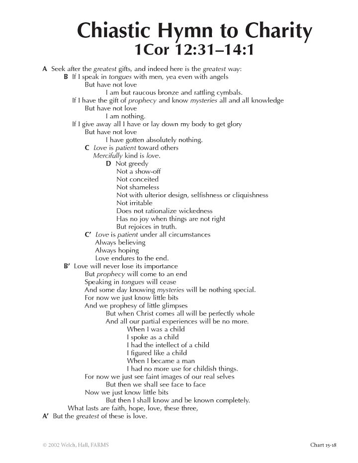

Moroni 7:1 describes this record as a speech that Mormon gave in a synagogue “which they had built for the place of worship.” One may glide over that little statement, not noticing that these people had been on the run, and were now able to settle down for a period of peace. They may have been quite proud of building this synagogue. It looks like they are expecting to be there for a while, although that would not happen.
In that synagogue, to the faithful (or relatively faithful) Mormon addressed several themes that related especially to his time and situation. He tailored his teaching to address the background and circumstance, and even the level of faith of his audience. If one can recognize the impetus for his talk and the problems with which he was dealing at the time, the teachings in Moroni 7 become all the more forceful, relevant, and meaningful.
In Moroni 7:3, Mormon began by saying, “I would speak unto you that are of the church.”
It appears that the text in Moroni 7 is Mormon’s opening speech after being commanded to teach and build up the church. In Mormon 3:2, he had received the call to preach again.
The Lord had said, “Cry unto this people. Repent ye and come unto me and be baptized and build up again my church and ye shall be spared”—a principle with a promise. In verse 2, Mormon explicitly said, “I am permitted to speak unto you at this time.” The Lord had permitted it, after a period of being asked not to preach, and he began by speaking to the more faithful.
Mormon’s wording aimed right at the hearts of his audience. He said, “I would speak unto you that are of the church, that are the peaceable followers of Christ, that have obtained a sufficient hope by which ye can enter into the rest of the Lord from this time henceforth until ye shall rest with him in heaven.” Any Nephite listening to Mormon would have been weary from being on the run. They were a war-torn generation. All they had known was strife and instability. Yearning for the peace that comes from entering into the rest of the Lord would have been a very powerful way for him to begin his talk, especially as a ten-year period of peace had been negotiated.
“And now my brethren, I judge these things of you because of your peaceable walk with the children of men.” He is speaking to his synagogue, his beloved brethren, his church, and his people. He was blessed with an inner-group of faithful believers. He was leading Nephites, Jacobites, Josephites, Zoramites, and many different people; but here, he is likely addressing the leaders, the ones who really held the Nephite tradition together. They were people who had hope in the “Rest of the Lord.” They had a start, and he wanted to stir them to greater works. Fourteen times, Mormon interrupts his train of thought by calling out to his “brethren,” and nine of those times he refers to them as “my beloved brethren.”
Mormon’s statement in verse 5, “For I remember the word of God which saith by their works ye shall know them; for if their works be good, then they are good also,” echoes the words of the Savior at the Temple, in 3 Nephi 14:16–20. There Jesus said, “Ye shall know them by their fruits …. A good tree cannot bring forth evil fruit, neither a corrupt tree bring forth good fruit …. Wherefore, by their fruits ye shall know them.”
Mormon, however, says, “By their works ye shall know them.” Whereas the Savior commonly used metaphors to illustrate principles, Mormon tended to use a more straightforward style of sentence structure, unembellished and very plain. His adaptations of the text come predominately through developing the concepts and principles to benefit his audience. He often added a new level of understanding to the words and phrases. In this case, the word “works” is more active, progressive, and ongoing, whereas “fruits” might be thought of as more final, specific, and result oriented.
Following this reference to the Savior’s sermon, Mormon went on to develop the thought even further. He explained that if their works were good, then they were good. He said, in verse 10, “Behold, God has said, a man being evil cannot do that which is good.” This refers back to Jesus’s metaphor of the tree in in 3 Nephi 14:17–19, in which a tree, being a good tree, cannot bring forth evil fruit. Mormon continued, “For if he offereth a gift or prayeth unto God, except he shall do it with real intent, it profiteth him nothing.”
Giving a gift, making an offering, or praying without real intent (i.e. doing so casually or grudgingly) is not counted as righteousness and one might as well not have performed the “righteous” action at all. Such gifts or offerings can be meaningfully compared to the giving of tithing today. In Mormon 2:14, Mormon had recorded that the people had refused to offer the ultimate and most desirable sacrifice—that of a broken heart and contrite spirit. Notice further that Moroni reused the words “with real intent” in his encouragement to pray to know the truth of the Book of Mormon in Moroni 10:4–5.
Moroni had learned this from his father.
Mormon also added a metaphor of his own in verse 11 to clarify his point and move forward into the next topic. He pointed out that “a bitter fountain cannot bring forth good water, neither can a good fountain bring forth bitter water, wherefore a man being a servant of the Devil cannot follow Christ and if he follow Christ he cannot be a servant of the devil.” That statement is related to a passage in the Sermon at the Temple in 3 Nephi 13:24: “Ye cannot serve God and Mammon.” Mormon’s people could not sit on the fence in this world. They needed to be soldiers, following Mormon, living righteously, and trying to fight the war. They didn’t have the luxury of choosing their lifestyle. However, they could choose how they responded to their circumstances. They could either face their challenges with the Savior or without him.
In verse 12, developing the thought of choosing between God and Mammon, Mormon concluded his message about good works versus evil works with a concept that pointed to his next topic: “Wherefore all things which are good cometh from God, and that which is evil cometh from the devil, an enemy unto God who fighteth against him continually.”
He was preparing to teach them how to choose, or judge, between good and evil using this principle.
The image of the devil fighting God continually would have resonated with this audience.
The war-torn but faithful Nephites would have understood what was being said. His imagery is consistent with his congregation’s experience.
Choosing the good from the bad at a time of oppression or in the heat of battle is especially hard. Mormon’s method of judging what is good—checking to see if a certain choice persuades them to believe in Christ through the Spirit or Light of Christ—is available to everyone even under trying circumstances. Mormon warns people not to judge good things to be of the devil, or evil things to be of God, and he assures them that there is a way for them to know the difference “with a perfect knowledge, as the daylight is from the dark night” (7:15). Mormon may have been thinking here about Alma’s meditation about how the growth of faith can lead to a “perfect knowledge,” a concept that Alma includes seven times in Alma 32:21, 26, 29, 34 and 35.
In verse 16, Mormon taught a very significant new concept. He explained that the spirit of Christ—or what today is more often called the “Light of Christ”—is given to everyone.
And this source of divine light can help us make righteous judgements: “The Spirit of Christ is given to every man, that he may know good from evil; wherefore, I show unto you the way to judge.” The idea that things “invite” people to do good (7:13, 16) is a very open part of the generously repeated message of the Book of Mormon to all the world.
There was a lot of emphasis on “light” in Christ’s Sermon on at the Temple. For instance, Christ wanted his followers themselves to become “the light of this people,” much like a candlestick (oil lamp) gives light unto a room, or like a city on a hill can give light to surrounding areas (3 Nephi 12:14–16). Jesus also taught, “The light of the body is the eye; if, therefore, thine eye be single, thy whole body shall be full of light” (3 Nephi 13:22). The eye is the organ by which we discern between physical light and darkness. Now, here in Mormon’s discourse, he also is discussing light and discernment. His ultimate purpose is to help his listeners discern how to “lay hold upon every good thing” (Moroni 7:18). It can be achieved through faith, hope, and charity. Thus, he introduces the theme of the rest of his talk, having built a solid foundation upon the words of Christ, explained, as needed to his audience’s circumstances.
Mormon taught, “See that ye do not judge wrongfully, for with that same judgment which ye judge, ye shall also be judged” (Moroni 7:18). This language is clearly adapted from Christ’s Sermon at the Temple in 3 Nephi 14:1–2: “Judge not, that ye be not judged. For with what judgment ye judge, ye shall be judged.” As Mormon has, by this point, made abundantly clear, his message isn’t concerned with making final judgments about other individuals—as we might think of “judging” others today in a negative way. Instead, the judgment to which he refers has more to do with generally discerning between good and evil in a variety of settings or applications. Our judgments must be informed and guided by the divine light or Spirit of Christ. When seen in the broader context of judging between good and evil, it is actually imperative that we do and must make judgments. As Mormon declared in verse 15: “it is given unto you to judge.” Judge we must, but we do so at our peril, if we do not learn to judge righteously using the light of Christ.
In the opening twenty verses of his speech, Mormon built a foundation on the teachings of the Savior to prepare for the main body of his sermon. He had taught them to be righteous by doing righteous acts, by evaluating decisions by virtue of the light of Christ, and making choices based on the potential for leading them to Christ. Now, he continued by teaching them, as he generalizes this in verse 21, that they should “lay hold on every good thing,” and in verse 22 that “in Christ there should come every good thing.”
That axiom stands at the logical and theological foundation of Mormon’s message, being as fundamental to Mormon’s thinking as Euclid’s first axiom was to his mathematics. The same point was not lost on Moroni. As his father’s protégé, Moroni begins his own final exhortations in his final chapter with a related contrapositive postulate: “And whatsoever thing is good is just and true; wherefore, nothing that is good denieth the Christ, but acknowledgeth that he is” (10:6).
By establishing the foundational proposition that Christ is absolutely essential in all that pertains to “the good,” the stage is then set for Mormon’s first expository lesson, which is about faith in Jesus Christ; and faith will in turn lead, secondly, to and also depend on hope; and the results of hope will, finally, be found in charity, good works, and the pure love of Christ.
While readers usually think of Moroni chapter 7 as Mormon’s great speech about charity, this oration is actually about four topics: “the good,” “faith,” “hope,” and then finally “charity.” Rhetorically, verses 5–28 are saturated with the word “good,” which appears in those verse 26 times! But in verses 29–48, the word “good” never appears.
Starting in verse 21, the word “faith” is blended in and appears a total of 24 times, scattered fairly evenly over verses 21–44.
The word “hope” is then used 10 times, with all (except for the one in verse 3) coming between verses 40–48, while the word “charity” is used only 8 times, all in the final verses 44–47.
In other words, Mormon starts with “good” alone (in verses 5–20), then unites “good” with “faith” (in 21–28), then speaks of “faith” alone (29– 39), then connects “faith” with “hope” (in 40–44), and finishes with a combination of the final two, “hope” and “charity” (44–48). This is an interesting, and well thought out, meditation on the interdependent spiritual movements from good, to faith, to hope, and to charity.
Of the three next interrelated sections, the longest is on faith. In Mormon 1:13, Mormon had described the wickedness of his people: “But wickedness did prevail upon the face of the whole land insomuch that the Lord did take away his beloved disciples and the work of miracles and of healing did cease because of the iniquity of the people.” His congregation was aware that miracles were not happening any longer, and they likely wondered why not.
Mormon mentioned this problem three times, in verses 27, 29, and 35, in which he asks three rhetorical questions. In verse 27, he asked, “Wherefore my beloved brethren, have miracles ceased because Christ is ascended into heaven?” The people were apparently arguing that the Savior was living up in heaven and had distanced himself from them.
Mormon countered in verse 29 with his second question: “And because he hath done this [ascended into heaven], my beloved brethren, have miracles ceased? Behold I say unto you, Nay; neither have angels ceased to minister unto the children of men.” As part of his evidence that miracles had not actually ceased, he taught the importance of angels and their mission, their ministry of calling people to repentance and seeing that the covenants of God are fulfilled.
After that brief clarification, he asked the same question again in a sequence of reasoning.
Verse 35 Mormon again asks: “If this be the case that these things are true which I have spoken unto you, and God will show unto you, with power and great glory at the last day, that they are true, and if they are true has the day of miracles ceased?” Mormon explained that it was not because of their theories, but that it was because of the iniquity of the people, because of lack of faith. In verse 37, he concluded that, “It is by faith that miracles are wrought; and it is by faith that angels appear and minister unto men; wherefore, if these things have ceased wo be unto the children of men, for it is because of unbelief, and all is vain.” Mormon uses questions here very effectively. In many cases, a good question is indeed half the answer, which is expressed in a German adage as: Gute Frage ist halbe Antwort.
Mormon also had spoken, in his earlier historical description, about the Holy Ghost being withheld. Mormon 1:14 declares, “And because of this iniquity there were no gifts from the Lord and the Holy Ghost did not come upon any.” Here one sees the contemporaneous problems, and the basis on which he builds his preaching. If miracles were to cease, and they had, verse 38 warns, “Awful is the state of man.”
Yet Mormon also made it clear that it was not God, or his angels, or the Holy Ghost who had ceased to appear or to work with humans here on earth. Again, he asks three more rapid-fire questions to show that God will not withhold his power so long as “there shall be one man upon the face of the earth to be saved” (7:36). (That reference to “one man upon the face of the earth” may well have haunted Moroni as he wandered as a lone survivor for many years upon the land.) Mormon also encouraged his audience by explaining that he knew that they could be faithful (7:37) and meek, and that they (and also we) could thus be “fit to be numbered among the people of his church” (7:39).
Following his treatment of faith, Mormon delicately intertwined that theme with his teachings on hope. Here he asks his two final questions: How can a person obtain faith except together with hope? And what should one hope for? (7:40–41). Again, one learns predominantly and specifically from Mormon, as one saw briefly with Alma, that if the power of the Holy Ghost is active, one hopes to be resurrected and to stand again in the presence of God (7:41). That is the last place the wicked want to be. Cleaving to the good and developing faith leads to hope in Christ, and those elements lead to charity. Faith is a necessary and sufficient condition for hope: If you have faith, you must have hope, for without faith there is no hope (7:42). Moreover, a person cannot have faith and hope unless they are meek and lowly of heart (7:43), and that meekness necessarily leads to charity (7:44).
Three results of true faith and hope are (1) being “acceptable before God,” (2) meekly confessing “by the power of the Holy Ghost that Jesus is the Christ,” and (3) having charity (7:44). Mormon’s logic here is that if you don’t have charity you are “nothing,” and, on the contrary, when a person is “acceptable before God,” that person must be something, not nothing, and thus must have charity. This is another way of saying that charity is essential, of the essence, even a necessary condition for existence in the presence of God.
Then, beginning in verse 45, Mormon used words that parallel some of Paul’s language in 1 Corinthians 13 about holy love ( agape) or charity. In this text, Mormon (like Paul) told his audience what charity is and is not, and what it does and does not do: “Charity (love) suffers long, and is kind.” (Moroni 7:45; 1 Cor. 13:4) “Charity envies not [thou shalt not covet], is not puffed up [is not proud], seeks not its own [is not selfish or egocentric], not easily provoked [is not irritable or defensive], and thinks no evil [for as a man thinketh in his heart, so is he].” These five track 1 Corinthians 13:5, but “vaunteth not itself” and “does not behave itself unseemly” are absent in Moroni 7:45, so the two lists are not exactly the same.
Charity “rejoiceth not in iniquity but rejoiceth in the truth, beareth all things, believeth all things, hopeth all things, endureth all things.” (Moroni 7:45; 1 Cor. 13:4).
Then, after concluding, “wherefore, my beloved brethren, if ye have not charity, ye are nothing” (Moroni 7:46) [compare “and have not charity, I am nothing” [1 Cor. 13: 3], Mormon says, “for charity never faileth” (Moroni 7:46; 1 Cor. 13:8).
Mormon then tells his audience absolutely to “cleave unto charity, which is the greatest of all” (7:46), while Paul glosses over this by saying merely that of these three, “faith, hope, charity, . . . the greatest of these is charity,” and beyond that, he says that what should be desired even more than charity is “rather that ye may prophesy” (1 Cor. 13:13–14:1).
Mormon, on the other hand, emphatically concludes that “charity is the pure love of Christ, and it endureth forever” (7:47).
So, these two texts, while very close, are not exactly the same, nor do they understand charity or speak of it in the same ways or for the same purposes.
But still, one wonders how these wordings in these two texts came to be so similar to each other. One possibility is that Jesus spoke these words to Mormon, who was “visited of the Lord, and tasted and knew of the goodness of Jesus” (Mormon 1:15). Here in Moroni 7, Mormon speaks as a personal witness of the pure love of Jesus and of obtaining “every good thing” through Him.
Additionally, Jesus may have spoken these words to his disciples, who recorded them in the fuller version of Jesus’s ministry among the Nephites briefly reported in 3 Nephi.
Mormon’s abridging still left in the point that Jesus spoke a hundred times more during those days than could be written (3 Nephi 26:6).
But, one might wonder, didn’t Paul write the “hymn to charity” in 1 Corinthians 13?
Maybe he did, but maybe not. In answering a question asked of him by the editors of the Church News section of the Deseret News in 1961 about why Joseph Smith used King James English in translating the Book of Mormon, Hugh Nibley happily pointed out that esteemed scholars, such as Harnack, Weiss, and Reizenstein, had independently come to the same conclusion that “the Hymn to Charity” in 1 Corinthians 13 had not originated with Paul at all, but went “back to some older but unknown source: Paul is merely quoting from the record,” as other early Christians, such as Clement, also did. In addition, Nibley added, “It is the same Savior speaking in both, and the same Holy Ghost, and so we can expect the same doctrines in the same language.” (See Hugh Nibley, “Literary Style Used in Book of Mormon Insured Accurate Translation,” in The Prophetic Book of Mormon, The Collected Works of Hugh Nibley , Volume 8 [Provo and Salt Lake City, UT: FARMS and Deseret Book, 1989], 216, 254). Other Latter-day Saint scholars have recently also allowed this as a possibility. (See Richard D. Draper and Michael D. Rhodes, Paul’s First Epistle to the Corinthians [Provo, UT: BYU Studies, 2017], 625).
Indeed, it is also not necessary to think that Paul invented the triad of faith, hope, and charity. While Paul was fond of using that triplet (he repeats that triad in other places in his letters; see Romans 5:1–5; Galatians 5:5–6; Ephesians 4:2–5; 1 Thessalonians 1:3; 5:8; Hebrews 6:10–12; 10:22–24), this triplet also occurs in other early Christian writings such as 1 Peter 1:3–8, 21; the Epistle of Barnabas 1:4; 11:8; and Polycarp 3:2. So, it appears that it was not unique to Paul. For it to have gained such early and widespread usage, it may well have originated with Jesus himself, who spoke often of “faith” ( pistis), especially in the first half of the Gospel of John, and of “charity” or “love” ( agape) particularly in the second half of John. This triad also appears in Alma 7:24. Its widespread prevalence gives substance to the theory that this cluster belonged to a more primitive stratum in Jesus’ teachings, as it also rings of divine truth.
And finally, I would add that the chiastic structure of 1 Corinthians 13 supports the idea that this “hymn” preexisted Paul’s writing of 1 Corinthians in about AD 55. It seems to be an independent composition inserted helpfully by Paul into the flow of his thought. But it has its own literary character, and it is presented as authoritative, without any need for argument or persuasive buttressing. Moreover, the fact that the list of words that also appears in Moroni 7:45 is featured precisely at the C-D-C' center of this chiastic structure would help explain why those words in particular would have stood out in the early Christian collective memory as a jewel coming from a treasured source. The following chart from Charting the New Testament (https://byustudies.byu.edu/charts/15-18-chiastic- hymn-charity) uses my translation, reflecting the Greek’s word orders and suggesting idiomatic additional meanings.

Figure 1 John W. Welch and John Hall, “Chiastic Hymn to Charity,” in Charting the New Testament, chart 15-18.
Interestingly, Joseph Smith did not include charity among the gifts of the Spirit in D&C 46:13–25 or in his Articles of Faith 7, but he often spoke of its need. And more curiously, Moroni did not include charity in his list of gifts of the spirit in Moroni 10:9–16, and neither did Paul in his list in 1 Corinthians 12:8–10. Lynne Wilson suggests that this may be because Joseph Smith (and others) may have felt that charity stood as a macro category by itself, which should be developed as an essential pervasive trait of character rather than received as a particular, received gift.
Charity Never Faileth, of course, is the motto of the Relief Society. Joseph Smith read 1 Corinthians 13 (apparently the whole chapter, not just these three words) in one of his first speeches to the women in Nauvoo, at the organization of the Relief Society.
In Paul’s Greek, the word for faileth literally means to “fall, i.e., dead,” and in Mormon’s war-torn world, to say something like charity would never die, or never fall dead, or come to naught, was a potent way of ending his promise about the unending salvific role of charity. Charity, Mormon claimed, was an immortal power, and that reassurance would have been very heartening for his people to hear, who were desperately worried about the survival of themselves individually and of their posterity. To be taught that they would not fail, or ultimately perish, so long as they had charity, added purpose and a desire for them to “lay hold on every good thing.”
Mormon alone then went on to provide an additional elevated definition of what the scriptures mean by charity, by this love. “Charity is the pure love of Christ” (7:47). The word “of” may be understood in several ways. It may refer to charity being Christ’s love of all mankind, and thus it may also mean that true charity refers to the love that one has when one loves as Christ loves. Additionally, it may also refer to the way that a person purely loves Christ, for His faithful flock may love Him, with charity then meaning our love of Him, of Christ. Scholars accept these different possible meanings of the English word of in that sentence. There is no reason it cannot be all three. Mormon provides a powerful and effective explanation of how one may develop faith, hope, and charity and weave them together to humanize the path of returning to our Father in Heaven.
In the end, verse 48 gives the key to attaining these blessings: “Pray unto the Father with all the energy of heart that ye may be filled with his love.” Mormon had said at the beginning of this speech that one must pray with real intent (7:6, a stipulation that Moroni will reiterate in 10:4), and thus he returns at the end of his sermon, full circle, coming back to the need for the giving of offerings and prayers in their worship in their new synagogue with fullness of intent and withholding nothing.
Then, this love, or charity, which will be bestowed upon all true followers of Jesus Christ, allows that they “may become sons of God, and when he shall appear, we shall be like him for we shall see him as he is” (7:48). The apostle John recalls this same promise, one which he knew because he had known Jesus, but which the world did not know, as he says, “because it knew him not” (1 John 3:1–2). The idea of both the potential and also of the obligation to become “even as he is” derives, in the Nephites’ minds, from these words of Jesus: “I would that ye should be perfect even as I [am]” (3 Nephi 12:48) and also from his words to his disciples, “what manner of men ought yet to be? Verily, I say unto you, even as I am” (3 Nephi 27:27).
Mormon then finishes with encouragement that all “may have this hope that we may be purified even as he is pure, Amen.” What a powerful ending to this relatively brief but logically dense and spiritually potent speech!